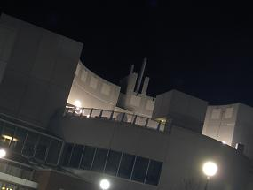

Hi, everyone... if anyone that is. My name is Gabriel, and this is my tscroll. Since everyone else I know is getting one I decided I could as well. We'll see how long it lasts. Sorry if it doesn't look good, I don't truly comprehend this net thing yet. Don't expect anything profound here, I just plan to rant and rave as most people. If you don't know me it shouldn't be anything special, and even then it's edgy.
I went to the market today, finally. I picked up some juice and utensils. Not at all exciting. Managed to spend u30 somehow, eek. Tonight I lay upon the hill by the mana tower. I was spread out upon my jacket, and pure gazing down into the inky depths of the sky, watching the occasional starfish pass by. The elephant was the only constellation I recognized, and I might be faking that. It feels a long time since I took a break. Life seems so fast lately, even when nothing much is happening. I need to slow down more often. Maybe I will join Wirt in his meditation next time.
Stillview is of the Landans' council next to the hill. Sorry for the bad angle.
